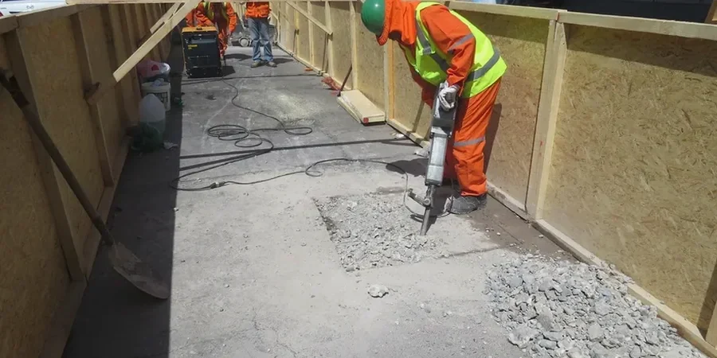

En nuestra oficina de La Coruña ofrecemos servicios integrales de geotecnia, desde la caracterización del subsuelo hasta el diseño de cimentaciones y el monitoreo de excavaciones. Combinamos experiencia regional consolidada con equipos calibrados para proporcionar informes que cumplen con la normativa española. Nuestro enfoque abarca todas las fases del proyecto: investigación de campo, ensayos de laboratorio, análisis geotécnico y recomendaciones constructivas. Para conocer más sobre nuestras capacidades, visite nuestra página sobre dilatómetro y losa de cimentación.

Imagen técnica de referencia — La Coruna
Enfoque y alcance
La geología de La Coruña está dominada por rocas metamórficas del Macizo Hespérico, principalmente esquistos y gneises del Complejo de Órdenes, así como granitos hercínicos. En la zona costera y en los valles fluviales, se desarrollan depósitos aluviales y coluviales con intercalaciones de arcillas limosas y arenas. El nivel freático es variable, siendo somero en las áreas cercanas al litoral y en los rellenos antrópicos del puerto. La ciudad presenta una sismicidad baja según la Norma NCSE-02, pero es importante considerar la posible presencia de suelos expansivos en las formaciones arcillosas residuales. También se debe evaluar la licuefacción en arenas sueltas saturadas durante eventos sísmicos excepcionales. Para proyectos de túneles o excavaciones profundas, es crucial caracterizar la fracturación del macizo rocoso y la permeabilidad de los materiales graníticos alterados. Ofrecemos servicios de permeabilidad en campo para evaluar estas condiciones.
Factores del sitio
Nuestra firma cuenta con experiencia regional consolidada en Galicia, habiendo participado en proyectos de edificación, obra civil y rehabilitación en La Coruña y su área metropolitana. Disponemos de un laboratorio de mecánica de suelos y rocas calibrado según la normativa ENAC, y nuestro equipo de ingenieros mantiene una estrecha coordinación con los colegios profesionales y las autoridades locales. Esto nos permite entregar informes geotécnicos conforme al CTE y a las exigencias municipales, garantizando soluciones seguras y eficientes. Para más información sobre nuestros trabajos, consulte nuestra sección de monitoreo de excavaciones.
En España, la geotecnia se rige por el Código Técnico de la Edificación (CTE), especialmente el Documento Básico SE-C (Cimientos) y SE-AE (Acciones). Para cimentaciones profundas se aplica la EN 1997 (Eurocódigo 7). Los ensayos de campo siguen normas UNE-EN ISO: el SPT según UNE-EN ISO 22476-3, el penetrómetro estático (CPT) según UNE-EN ISO 22476-1, y el ensayo de placa de carga según UNE 7391. La evaluación sísmica se realiza conforme a la NCSE-02. Toda nuestra instrumentación está calibrada según las directrices de la Entidad Nacional de Acreditación (ENAC).
Preguntas comunes
¿Qué tipo de estudios geotécnicos son más comunes en La Coruña?
En La Coruña, los estudios más frecuentes incluyen la caracterización de suelos residuales graníticos y esquistos, así como la evaluación de rellenos antrópicos en zonas portuarias. También son habituales los estudios de cimentación para edificios de hasta 10 plantas, y los análisis de estabilidad de taludes en laderas urbanizadas. La presencia de nivel freático alto en algunas zonas requiere ensayos de permeabilidad y control de aguas subterráneas.
¿Cuánto tiempo suele tardar un estudio geotécnico en La Coruña?
El plazo depende de la complejidad del proyecto y del número de sondeos necesarios. Para una vivienda unifamiliar típica, el trabajo de campo (sondeos y ensayos SPT) puede completarse en 2-3 días, y el informe final suele entregarse en 2-3 semanas desde la finalización del campo. En proyectos mayores, como promociones de viviendas o naves industriales, los plazos se extienden proporcionalmente.
¿Qué normativa española regula los estudios geotécnicos en Galicia?
Los estudios geotécnicos en Galicia se rigen por el Código Técnico de la Edificación (CTE), en particular el Documento Básico SE-C (Cimientos). También se aplica la EN 1997 (Eurocódigo 7) para cimentaciones especiales. La normativa sísmica es la NCSE-02, aunque Galicia tiene baja sismicidad. Los ensayos de campo siguen normas UNE-EN ISO. Además, el planeamiento urbanístico municipal puede exigir requisitos adicionales.
¿Cómo afecta la geología granítica de La Coruña al diseño de cimentaciones?
La presencia de granito sano o ligeramente alterado proporciona una buena capacidad portante, permitiendo cimentaciones superficiales como zapatas o losas. Sin embargo, en zonas donde el granito está muy alterado (saprolito) o hay esquistos meteorizados, pueden aparecer suelos blandos que requieren cimentaciones profundas o mejoras del terreno. También es común encontrar bolos graníticos que dificultan la hinca de pilotes, por lo que se recomienda un reconocimiento geotécnico detallado.